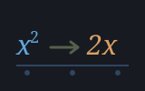
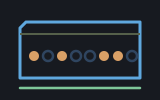
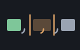
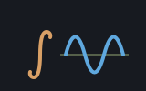

str is the everyday toolbox for pulling strings apart and
putting them back together: split a line into fields, join a list back into
one string, trim off stray spaces, swap one bit of text for another, and ask
simple yes/no questions like "does this start with that?" Shoddy already
gives you a small set of built-in string primitives —
Instr (find where one string sits inside another) and
InstrFrom (the same, from a position, without copying the tail
to get there), Left, Right, and Mid
(grab a piece off the front, the back, or the middle), and Len
(how long it is).
Those are sharp but low-level; str stacks the friendlier,
more-often-wanted verbs on top of them. Alongside the surgery it carries the
conversion guards (IsBool / ToBool /
ToBoolOr / ToBoolOpt for booleans, partnering the
IsNumeric / ValOr builtins that guard
Val) and the fixed-width
number formatters every readout wants (PadLeft,
PadRight, PadZero, ToFixed,
Commas). Everything here is pure — it reads its inputs and
returns a fresh string, never touching a file or the screen.
Text was an afterthought in early computing languages — Fortran
made you smuggle characters through numeric variables in "Hollerith fields",
counted by hand — and one of BASIC's quiet revolutions was deciding,
within a couple of years of its 1964 birth at Dartmouth, that a string
should be an ordinary value: something a variable holds, an operator joins,
and a function slices. The dialect that conquered the microcomputers
settled the vocabulary — LEFT$, RIGHT$ and
MID$ to take a piece off the front, the back or the middle,
INSTR to find one string inside another, LEN to
measure — and for a generation who learned programming on those
machines, that five-word kit was text processing. Shoddy's string
builtins are that kit, minus the dollar signs and with the copying costs
made honest; this machine is the layer every BASIC programmer built on top
of it, page by page — the splits, joins, trims and pads —
finally written down once.
Text is how programs talk to people, and it almost never arrives in the
shape you want it. A line read from a file is one long string, but you wanted
the three comma-separated fields inside it. A name typed by a user comes with
a hopeful space on the end. You've got a list of words and want them printed
as one tidy sentence. Each of these is a small, fiddly job with the raw
primitives — find the comma, take the left part, take everything after
it, do it again — and getting the off-by-one right every time is
exactly the sort of tedium worth writing down once and never again.
str is that write-down: reach for Split and
Join to move between one string and a list of pieces,
Trim to clean up whitespace, Replace to substitute
text, and the StartsWith/EndsWith pair to test the
ends. It pairs naturally with lists, so it sits comfortably alongside
seq.
Include the file and the words are yours. Most take a string (or a list of strings) and hand back a new one — strings are immutable, so nothing you pass in is ever altered.
Include "str.shoddy"
Def Main()
Let csv = "ada,lin,grace"
Let parts = Split(csv, ",")
Print(Length(parts)) ' 3
Each(parts, Fn(w) => Print(w)) ' ada, then lin, then grace
Print(Join(parts, " & ")) ' ada & lin & grace
Print(Trim(" hello ")) ' hello
Print(Replace("a-b-c", "-", "/")) ' a/b/c
Print(StartsWith("shoddy", "sho")) ' True
Print(EndsWith("shoddy", "xyz")) ' False
Print(StrRep("ab", 3)) ' ababab
Print(ToBoolOr(Input("READY (Y/N)? "), False)) ' y, yes, true, 1 ...
Print(ToFixed(0.4, 2)) ' 0.40 (never "0.4")
Print(Commas(1234567.891, 2)) ' 1,234,567.89
Print(PadLeft(Str(42), 6)) ' 42
Print(PadZero(7, 2)) ' 07A few things worth remembering:
Split turns
one string into a list of pieces on a separator; Join glues a
list back into one string with a separator between the pieces.
Join(Split(s, ","), ",") gets you back where you started.Split and Replace stop the program if you hand them
an empty separator or pattern — there's no sensible way to split on
nothing.Replace walks
the whole string swapping every occurrence of old for
new, not just the first one.StartsWith and EndsWith compare literally —
"Sho" is not "sho". An empty pattern matches
anything (every string starts and ends with nothing).ToBool accepts only TRUE and FALSE (any case, outer space
ignored) and stops the program on anything else — exactly as the
Val builtin does for numbers. ToBoolOr never stops:
it also understands the prompt vocabulary (T/Y/YES/1 and F/N/NO/0) and hands
back your fallback for anything else, the way ValOr does for
numbers. Guard with IsBool / IsNumeric when you
want to ask first.ToBoolOpt is the one underneath, and the one to
reach for when it matters. The other two are one-liners over it,
and neither can be built from the other: a strict word throws the answer
away on failure, a fallback word throws away the fact that there
was a failure. ToBoolOr(s, False) cannot tell you
whether the False was typed or supplied;
ToBoolOpt can, because Some(False) and
None are different answers. It returns the language's own
Option, so matching on it needs no further
Include.ToFixed always shows exactly the decimals you asked for
(ToFixed(x, 0) is the whole-number form, no decimal point), and
Commas adds the thousands grouping of BASIC's
PRINT USING "##,###.##". Both round half-up at the last shown
digit. The pads never truncate — a string already wider than the field
comes back unchanged.The eighteen string words the runtime dispatches — not defined here, documented here
These are not str's Defs. The engine dispatches
them, and a Def whose name is a builtin is refused. They are
listed on this page because str is the machine whose domain they
belong to, and because a reader who opens the strings machine looking for
Left should find it rather than be expected to know that
the flat reference exists. They need
no Include — a builtin is callable from any program. The
same eighteen are documented word for word in
machines/str.shoddy's own header block. Positions and lengths
count from 1; all eighteen are pure.
| Word | Description |
|---|---|
| s1 & s2 | The two strings joined. The one string word with no name — it is an operator, and it adds numbers too. |
| Len(s) | How many characters the string holds.
Length is the list word and refuses a string outright,
so the two are not a near miss. |
| Word | Description |
|---|---|
| Left(s, n) | The first n characters, or the whole
string if it is shorter. A fractional n truncates rather than
refusing. |
| Right(s, n) | The last n characters, or the whole
string if it is shorter. |
| Mid(s, start, n) | n characters from position
start. A range past the end is trimmed to what is there rather
than refused — which is what makes CodeAt worth
having. |
| Word | Description |
|---|---|
| Instr(s, sub) | Where sub first appears in
s, or 0 when it does not. An empty sub answers
0. |
| InstrFrom(s, sub, from) | The same search begun at position
from, without copying the subject to get there.
Split and Replace are linear in their subject
because of this word; a from past the end answers 0. |
| Word | Description |
|---|---|
| Upper(s) | The string case-folded up. The language folds word names the same way, which is why reckoner calls this at every lookup. |
| Lower(s) | The string case-folded down. |
| Word | Description |
|---|---|
| Chr(n) | The character with code n.
Chr(0) is the empty string and not a NUL —
FromCodes is how a NUL is built. A code above 65535 casts to 16
bits and wraps silently rather than failing. |
| Asc(s) | The code of the first character. Aborts on the empty string, which has none. |
| Codes(s) | The code of every character, in order, as an
Array — so a scanner indexes with Nth in
O(1) rather than walking a list. An empty string answers an empty array.
Total. |
| FromCodes(codes) | The string those codes spell.
Codes' exact inverse, NUL included, which is the one string
Chr cannot build. |
| CodeAt(s, k) | The code of the character at position
k. It refuses past the end where Mid trims,
and that is the point of it: Asc(Mid(s, k, 1)) reads the wrong
character and then aborts naming Asc, a word away from the index
that was actually wrong. |
| Word | Description |
|---|---|
| Str(x) | A number written out as text, the way the stack shows it — ten significant digits, so an arbitrary double does not round-trip bit-exactly. |
| Val(s) | Text read back as a number. The whole string must be
one number, whitespace aside — Val stops the program on
anything else, so "twelve", "3kg" and
"1.2.3" all abort rather than answering. Ask
IsNumeric first, or reach for ValOr. (It took a
leading number off a longer token once, strtod-style, until a
mistyped coordinate parsed to a real place hundreds of miles away.) |
| ValOr(s, fallback) | The same read, answering
fallback for text that is not a number. The total form of the
pair. |
| IsNumeric(s) | Whether Val would read this text as
a number — the question Val itself does not ask. The whole
string is the number or it is not one: "3kg" and
"1.2.3" answer False. |
Every word, plus one internal helper
| Word | Description |
|---|---|
| Split(s, sep) | Breaks s into a list of pieces
wherever sep appears, dropping the separators themselves. Always
returns at least one piece. Stops the program if sep is
empty. |
| Join(xs, sep) | Glues the list of strings xs into
one string, with sep between each pair. An empty list joins to
the empty string. |
| Word | Description |
|---|---|
| Trim(s) | A copy of s with leading and trailing
space characters removed. Spaces in the middle are left alone. |
| Replace(s, old, new) | A copy of s with every
occurrence of old replaced by new. Stops the
program if old is empty. |
| Word | Description |
|---|---|
| StartsWith(s, p) | True if s begins with
p. Exact-case; an empty p is always
True. |
| EndsWith(s, p) | True if s ends with
p. Exact-case; an empty p is always
True. |
| Word | Description |
|---|---|
| StrRep(s, n) | A string made of s repeated
n times, end to end. n of zero or less gives the
empty string. |
The string-to-number side of this family lives in the builtins:
IsNumeric(s) is true when Val(s) would succeed,
and ValOr(s, fallback) is the total conversion that hands back
the fallback instead of stopping.
| Word | Description |
|---|---|
| IsBool(s) | True when s names a boolean strictly:
TRUE or FALSE, any case, outer spaces
ignored. |
| ToBoolOpt(s) | The primitive, and the honest
one — Some(True), Some(False), or
None when the string names neither. Takes the prompt
vocabulary: TRUE/T/YES/Y/1
and FALSE/F/NO/N/0.
Returns the language's own Option, so no extra
Include is needed to match on it. Was added in v1.7.0; the two
below are one-liners over it. |
| ToBool(s) | The strict conversion: TRUE and
FALSE only (any case, trimmed). Stops the program on anything
else, as Val does for numbers. Named Bool
before v1.7.0. |
| ToBoolOr(s, fallback) | The total conversion, with the prompt
vocabulary included; anything it cannot read is fallback.
Cannot tell you whether a False was typed or supplied —
use ToBoolOpt when that matters. Named
BoolOr before v1.7.0. |
| Word | Description |
|---|---|
| PadLeft(s, n) | s right-aligned in a field of
n by padding spaces on the left; unchanged if already that
wide. |
| PadRight(s, n) | s left-aligned in a field of
n by padding spaces on the right; unchanged if already that
wide. |
| PadZero(x, n) | x as a whole number zero-padded
to at least n digits (PadZero(7, 2) is
"07"). A minus sign rides outside the padding. |
| ToFixed(x, p) | x with exactly p
decimal places — "0.40", never "0.4" —
rounded half-up at the last shown digit. p of 0 gives the whole
number with no decimal point. (Named like ToArray and
ToList — and because Fixed is too handy a
field name to claim.) |
| Commas(x, p) | x with thousands commas and
p decimals — the classic ##,###.##:
Commas(1234567.891, 2) is "1,234,567.89",
Commas(n, 0) groups a whole number. |
| CommaGroup(digits) | Commas' helper: a digit string grouped in threes from the right. Digits only — no sign, no decimal point. |
| User | How | |
|---|---|---|
 | alg | Join assembles the printer's output and StrRep indents the debugging tree. |
 | bool | StrRep zero-pads a rendering in any base — PadZero takes a Number and so cannot — and Join assembles the truth table and the sum and product forms. |
| clock | PadZero
keeps the timestamp fields two and three digits wide. | |
 | csv | Join, Replace, Trim and StartsWith under the scanner and the writer. |
| cuttle | Join and the padding words build the abbreviated list and matrix renders. | |
 | demographics | CSV
carving in the trainer, Trim on the predictor's
prompts. |
 | devils-dust | PadLeft
and ToFixed keep the footer gauges and knob readouts from
jittering. |
| emley-moor | Join and
Replace build every page the server sends, and escape the parts
a stranger wrote. | |
 | eng | ToFixed and Commas build EngSci, EngMetric and EngCommas. |
| file | Split,
Join, Replace and EndsWith for line
and path chores. | |
| fin | CommaGroup and PadZero build FinFmt. | |
| geo | ToFixed and PadZero write a coordinate out as degrees, minutes and seconds; Trim tidies one on the way in. | |
| halifax | Join and Split turn a list of rows into a saved file and back; Trim takes the carriage return off a definition written on another platform. | |
| html | Split and Join under the attribute scanner and the
serializer. | |
| https | Split,
Join, Trim and StartsWith are the whole
of the HTTP parser. | |
 | iris | CSV carving in
the trainer (Split, Trim,
StartsWith); Trimmed prompts,
StrRep probability bars, and the
PadLeft/PadRight report columns. |
| json | Join
puts the writer's fragments together in one pass at the end, and
StrRep makes the pretty printer's indentation. | |
| money | MoneyFmt
is CommaGroup dollars and PadZero cents. | |
| mps | Split,
Replace and StartsWith parse the fixed-format MPS
sections. | |
 | mungo-caverns | The
command line is Trimmed and Split into words;
Replace patches messages. |
| net | Join puts a
reply back together from the chunks it arrived in. | |
 | pac-vt100 | Replace
rebuilds a board row around one changed cell. |
| reckoner | Upper case-folds a name at registration and lookup, matching the language. | |
 | simplex-from-mps | StartsWith
picks the flags out of the command line. |
| sparky | Split and Trim turn sparkyrc into lines on the way in. | |
 | tally | Split and Trim take a spec line apart; PadLeft, PadRight and ToFixed lay the report out in columns. |
| weather-glass | PadLeft,
PadRight, PadZero and ToFixed lay
out all 58 columns. | |
| xml | Join
assembles the writer's fragments in one pass, and StrRep makes
the pretty printer's indentation. |
None — built on the eighteen string builtins alone,
which is what lets clock, file, money and mps all lean on it freely.
Split and Replace carry a position and call
InstrFrom rather than recursing on a copy of the tail; that is
what makes Split linear in its subject rather than quadratic,
and it changes nothing about what either word answers.